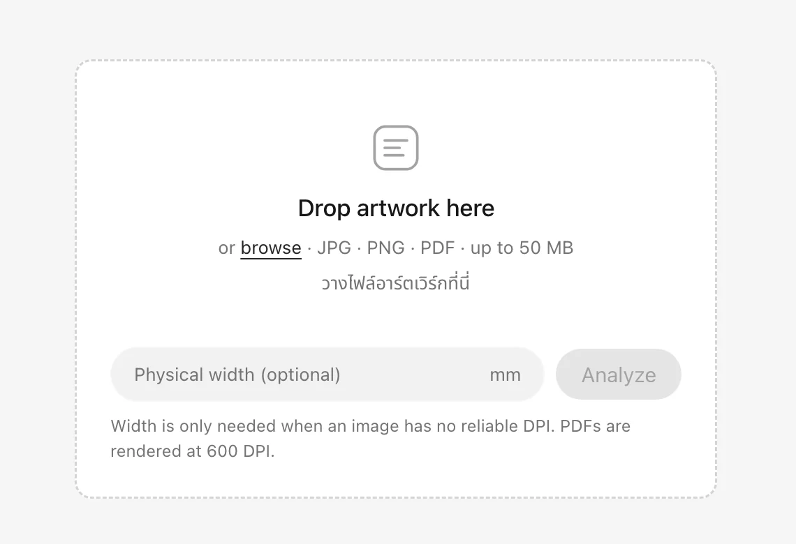

The brief and the build
What was needed
Every revision had to be checked against the approved file, and by hand that is slow. What slips through is rarely the obvious thing — it is the small change that carries the most risk once the job is printed.
Work I did
I shaped the product and built it: framing the problem, setting what the system has to catch, and designing how a reviewer works through what it finds. I then implemented it as a Next.js web app that keeps the artwork and its checks in one workspace, in Thai and English.
